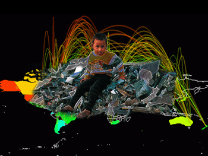
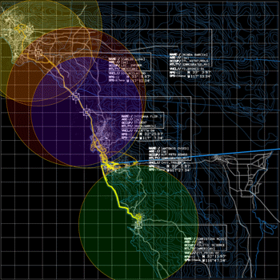

www.maclaarte.org Cyberspace and its related "computer revolution" have been called the new frontier by many cultural theorists. "Frontera Electronica" features a series of investigations that examine the multifaceted role between technology and humanity. In Spanish, the word frontera refers to both "the frontier" and "the border." The dual aspect of this word is an apt reminder of both the possibilities and the limits of technology. Frontera Electronica features the work of Bay Area-based artists Jesus Aguilar (San Jose), Juan Luna-Avin (Mountain View), Praba Pilar (Oakland), and the Tijuana, MX-based artist collective Torolab. It is on view at MACLA/Movimiento de Arte y Cultura Latino Americana from 8/7 to 10/7/06. 
Cyber.Labia No. 8, Praba Pilar digital image, 2005
Praba Pilar’s digital collage series Cyber.Labia address the darker side of the technology revolution. The title of her series stems from the Larousse Spanish/English dictionary definitions of the word cyber - redes informaticas de comunicacion, which translates to "information web for communication" and the word labia - facilidad para hablar con gracia, which translates to the "ability to speak with grace." She states, "The computer revolution has created a dialogue of development for the world that bypasses recurrent problems of class, race, gender and the environment." Her images map the complex relationship between the "first world" where the technology is generated and the "third world" as a destination for cyber refuse. Here one finds young children scavenging discarded computers and cell phones parts for recycling, and the milk of nursing mothers has high levels of toxins in the affected regions. A Bay Area/Colombian multi-disciplinary artist, Praba Pilar has worked on multiple projects in the public sphere through installations, performances, and interactive projects. Her background in community work and political activism establishes the platform in which she artistically confronts the conflict between humanitarian, political and economic motivations. Praba Pilar graduated with a BFA in art from Mills College this past spring. The work of Jesus Aguilar examines the logic of digital technology, communication systems, and the act of mark making. In his piece, Dante’s Inferno in 8 minutes 34 seconds shows the tension between ancient times and the digital age. This 8 minute, 34 second video projection of Dante’s classic Inferno is an indecipherable deluge of text which displays the entirely of this epic poem. Computer Simulation: Binary Language Lessons 1-3 is a humorous project where the artist attempts to "speak" in the digital language of zeros and ones, following the format of a foreign language educational video. Jesus’ intent with this piece is to "examine the complexity of the binary system, whilst drawing attention to its bare-bone simplicity and incompatibility with human expression. Jesus graduated with a BFA in photography from San Jose State University in 1999 and received his MFA from Mills College focusing on video, digital media and photography this past spring. LRTP, Torolab, video installation & topographical Juan Luna-Avin’s Untitled (Video Ruido) installation looks at the economic impacts of piracy and subterranean economies. Modeled after makeshift stands found in Mexico City marketplaces, and similar to those found at San Jose’s Berryessa Flea Market, his project sells bootleg cds and videos. The production and sale of illegal merchandise, fake copies of Spanish language music cds and videos brings to focus the black market situation that stems from Latin America to here in San Jose. This phenomenon engages street vendors found hawking the latest releases at a fraction of the cost. Using decidedly "low-tech" aesthetics, along with modern technology’s capacity to bootleg, Luna-Avin’s stand features a range of contemporary Latin American selections from Mexican pop divas to Argentinean divas, along with a tv playing select videos. Born in Mexico City, Juan Luna-Avin graduated with a BFA from the San Francisco Art Institute. The Tijuana-based artist collective, Torolab is know for their explorations of life and technology at the Mexico and United States border. For Frontera Electronica, their contribution of the piece LRTP is comprised of a model and video projection of the movement of five people in the transborder region. Using GPS technology, 5 people were tracked for 5 days to reveal the both fluidity and limitations of this region. What results from the data is the vehicular movement and economic transactions of these five people projected onto a topographical urban/natural structure, rather than a mapping of political perimeters. Founded by Raúl Cárdenas Osuna in Tijuana, B.C., México, Torolab is a laboratory of spatial investigations, art and contextual living phenomena. Their main interest lies in proposition and not in protest. And to establish deep relationships between people, ideas, and equipment for life. With their experiments they search for the sublime in everyday life--the DNA of comfort and an atmosphere of warm humanism: to obtain a better quality of life. www.maclaarte.org Computers Are A Girl’s Best Friend Computers Are A Girl’s Best Friend is a ribald exploration of the contradictions that exist between the hyperbolic rhetoric of the computer industry and the dreadfully real effects on the lives of women. This project counters the sexiness of the computer industry by disrobing the truth of the exportation of toxic electronic waste to Asia; the trafficking of women online, the globalization of maternal love, telesexuality, Real Dolls and other extraordinary effects of the computer revolution on the female subject. Sneak previews of the lack of women’s participation and representation in mainstream media, the sexist portrayal of women in the media, and women’s disadvantaged access to new communication technologies are also featured. Appropriating De Beers Diamond Company's marketing strategy of producing the 1953 musical Gentlemen Prefer Blondes and the theme song Diamonds Are A Girl's Best Friend, Computers Are A Girl’s Best Friend transposes the lyrics and dance routine to the new hit. The performance features satiric musical theatre interspersed with monologues, audio of interviews with cyber theorists Anne Balsamo and Paulina Borsook, and with Sheila Davis of the Silicon Valley Toxics Coalition. |